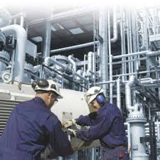
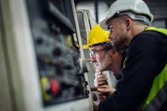
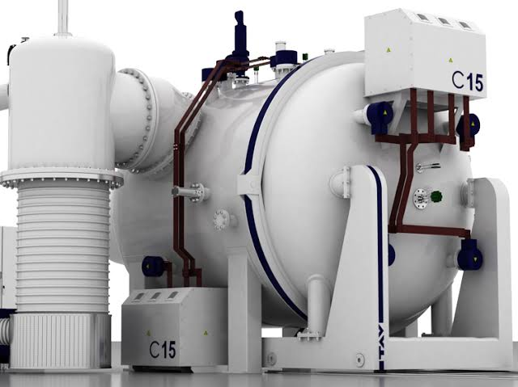

Nuestros servicios
“En Grupo Industrial Ancor, somos especialistas en la fabricación y reparación de hornos de alto vacío de alta precisión. Con tecnología avanzada y un equipo de expertos apasionados, nos esforzamos por entregar productos y servicios que superen las expectativas y contribuyan al éxito de nuestros clientes.”
Reparacón y mantenimiento
Reparación para hornos de alto vacío:
Nuestros técnicos especializados están capacitados para diagnosticar y reparar problemas en hornos de alto vacío de manera rápida y precisa. Con nuestra ayuda, podrás minimizar el tiempo muerto y asegurar la calidad de tus procesos. ¡Confía en nosotros para mantener tus hornos funcionando al máximo rendimiento!

Mantenimiento preventivo:
La clave para evitar problemas y asegurar la confiabilidad de tus hornos. Nuestro programa de mantenimiento preventivo incluye inspecciones periódicas, reparaciones y ajustes precisos para detectar y corregir problemas antes de que se conviertan en fallas costosas. Con nuestro mantenimiento preventivo, podrás reducir el riesgo de paradas imprevistas y prolongar la vida útil de tus hornos.
Mantenimiento proactivo:
Anticiparse a los problemas antes de que ocurran. Nuestras soluciones de monitoreo avanzado y análisis predictivo te permiten conocer el estado real de tus hornos y planificar intervenciones precisas. De esta manera, puedes optimizar tus paradas de producción, reducir costos y mejorar la eficiencia general de tus operaciones.

¿Por qué confiar en nosotros?
Para la fabricación y reparación de hornos de alto vacío: precisión y calidad en cada detalle. Nuestros expertos en ingeniería y fabricación trabajan juntos para crear hornos de alto vacío que cumplen con los más altos estándares de calidad y rendimiento. Ya sea que necesites un horno personalizado o la reparación de un equipo existente, nuestra experiencia y tecnología de vanguardia nos permiten ofrecer soluciones innovadoras y confiables.
